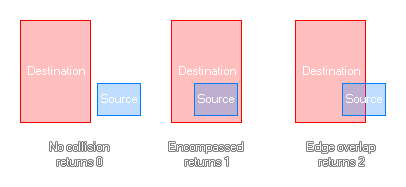

Cette fonction vérifie deux zones rectangulaires que vous définissez pour voir si le rectangle source n'est pas en collision, complètement dans les limites des rectangles de destination ou si elles se touchent simplement. Si elles ne se touchent pas du tout, la fonction retournera 0, si la source est complètement dans la destination, elle retournera 1, et si elles se chevauchent tout simplement, elle retournera 2. L'image ci-dessous illustre ceci: 
rectangle_in_rectangle(sx1, sy1, sx2, sy2, dx1, dy1, dx2, dy2);
| Argument | La description |
|---|---|
| sx1 | La coordonnée x du côté gauche du rectangle source. |
| sy1 | La coordonnée y de la face supérieure du rectangle source. |
| sx2 | La coordonnée x du côté droit du rectangle source. |
| sy2 | La coordonnée y du bas du rectangle source. |
| dx1 | La coordonnée x du côté gauche du rectangle de destination à vérifier. |
| dy1 | La coordonnée y de la face supérieure du rectangle de destination à vérifier. |
| dx2 | La coordonnée x du côté droit du rectangle de destination à vérifier. |
| dy2 | La coordonnée y du bas du rectangle de destination à vérifier. |
Real
switch(rectangle_in_rectangle(x - 50, y - 50, x +
50, y + 50, mouse_x - 50, mouse_y - 50, mouse_x + 50, mouse_y +
50))
{
case 0: image_blend = c_yellow; break;
case 1: image_blend = c_red; break;
case 2: image_blend = c_orange; break;
}
Le code ci-dessus vérifie la collision entre deux zones rectangulaires et définira l'instance. image_blend basé sur la valeur de retour.